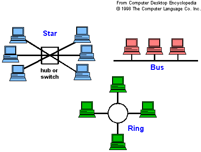

หน่วยที่ 5 เครือข่ายระบบอินเทอร์เน็ต
การเชื่อมต่อเครือข่ายระยะใกล้
LAN ย่อมาจาก Local Area Network คือระบบเครือข่าย แบบเชื่อมต่อคอมพิวเตอร์เข้าด้วยกันในระยะจำกัด เช่น ในอาคารเดียวกัน หรือบริเวณเดียวกันที่สามารถลากสายถึงกันได้โดยตรง ส่วนมากจะใช้สายเคเบิ้ล หรือ ที่เรียกกันว่า สายแลน เป็นตัวกลางในการเชื่อมต่อ อัตราเร็วของเครือข่าย LAN อยู่ที่ระหวาง 1-100 Mbps ทั้งนี้ความเร็วขอมูลขึ้นอยู่กับ ตัวกลางสายส่งที่ใช้ เทคนิคการส่งสัญญาณ และข้อกำหนดของผู้ให้บริการเน็ตเวิร์ค
การเชื่อมโยงเครือข่ายแบบแลน มี 3 รูปแบบ คือ
- 1.Bus มีการรับส่งข้อมูลด้วยความเร็ว 10-100 MB/sจะเชื่อมต่อกันบนสายสัญญาณเส้นเดียวกัน โดยจะมีอุปกรณ์ที่เรียกว่า T-Connector เป็นตัวแปลงสัญญาณข้อมูลเพื่อนำเข้าสู่ระบบคอมพิวเตอร์และ Terminator
ในการปิดหัวท้ายของสายในระบบเครือข่ายเพื่อดูดซับข้อมูลไม่ให้เกิดการสะท้อนกลับของสัญญาณ
- 2.Star เป็นระบบที่มีเป็นการต่อแบบรวมศูนย์ โดยเครื่องคอมพิวเตอร์ทุกเครื่องจะต่อสายเข้าไปที่อุปกรณ์ที่เรียกว่า Hub หรือ Switch โดยอุปกรณ์ที่เรียกว่า Hub หรือ Switch
จะทำหน้าที่เปรียบศูนย์กลางที่ทำหน้าที่กระจายข้อมูล โดยข้อดีของการต่อในรูปแบบนี้คือ หากสายสัญญาณเกิดขาดในคอมพิวเตอร์เครื่องใดเครื่องหนึ่ง เครื่องคอมพิวเตอร์อื่นๆจะสามารถใช้งานได้ปรกติ แต่หากศูนย์กลางคือ Hub
หรือ Switch เกิดเสียจะทำให้ระบบทั้งระบบไม่สามารถทำงานได้ทั้งระบบ
- 3.Ring เป็นระบบที่มีการส่งข้อมูลไปในทิศทางเดียวกัน โดยจะมีเครื่อง Server หรือ Switch ในการปล่อย Token เพื่อตรวจสอบว่ามีเครื่องคอมพิวเตอร์ใดต้องการส่งข้อมูลหรือไม่และระหว่างการส่งข้อมูลเครื่องคอมพิวเตอร์อื่นๆที่
ต้องการส่งข้อมูลจะต้องทำการรอให้ข้อมูลก่อนหน้านั้นถูกส่งให้สำเร็จเสียก่อน

ข้อดีของระบบ LAN เนื่องจาผู้ใช้คอมพิวเตอร์ในวง LAN เดียวกันสามารถใช้ทรัพยากรที่มีในวง LAN ร่วมกันได้ ทำให้ประหยัดค่าใช้จ่ายในการจัดซื้อสำหรับอุปกรณ์ที่สามารถใช้งานร่วมกันได้ เช่น เครื่องพิมพ์ หรือสแกนเนอร์ เป็นต้น
การขนย้ายข้อมูลระหว่างเครื่องต่อเครื่องในระบบ ทำได้รวดเร็วกว่าการขนย้ายข้อมูลด้วยแผ่นดิสเก็ต เป็นระบบพื้นฐานในการเชื่อมต่อเข้ากับอินเทอร์เน็ต
ข้อเสียของระบบ LAN ถ้าสายเคเบิ้ลขาดจะไม่สามารถโอนถ่ายข้อมูลได้
การเชื่อมต่อเครือข่ายระยะไกล
- แบบที่ 1 จะต้องติดตั้งอุปกรณ์ที่เรียกว่า รีพรีตเตอร์ เครื่องทวนสัญญาณ ไว้ทุกๆ ระยะ 100 เมตร เพราะเนื่องจากข้อจำกัดที่ไม่สามารถติดตั้ง ฮับ หรือ สวิตซ์ โดย ผ่านสาย ยูทีพี ที่มีระยะห่างเกิน 100 เมตร
- แบบที่ 2 ใช้โมเด็ม หมุนโทรศัพท์เข้าหากัน เมื่อต้องการเชื่อมต่อ เมื่อเสร็จสิ้นธุรกิจแล้วก็ยกเลิกการเชื่อมต่อ
- แบบที่ 3 เป็นเทคโนโลยีระบบเครือข่ายที่มีประสิทธิภาพดีที่สุดในปัจจุบัน ค่าใช้จ่ายแพงที่สุด คือสายใยแก้วนำแสงไฟเบอร์ออปติก มีความปลอดภัยของข้อมูล จะต้องมีอุปกรณ์ที่เรียกว่า Media Converter
ซึ่งอุปกรณ์ตัวนี้จะทำหน้าที่ในการแปลงสัญญาณจากสายทองแดง (Copper) ไปเป็นสัญญาณไฟเบอร์ออปติก มักจะนิยมใช้ในองค์กรที่มีขนาดใหญ่และมีความสำคัญของข้อมูลมาก เช่น กองทัพ หรือ ธนาคารต่างๆ
- แบบที่ 4 Wireless Lan หรือการสื่อสารไร้สาย เหมาะสมสำหรับการติดตั้งในพื้นที่ที่มีขนาดจำกัด มากกว่าการนำมาติดตั้งเพื่อใช้ระหว่างอาคาร การทำงานแบบไร้สายจะทำงานบนมาตรฐาน 802.11b
ที่มีความเร็วในการส่งสัญญาณข้อมูลสูงสุดถึง 11Mbps
- แบบที่ 5 คือเทคโนโลยี G.SHDSL ซึ่งเป็นหนึ่งเทคโนโลยีตระกูล DSL โดยเทคโนโลยี DSL นี้ก็ย่อมาจาก Digital Subscriber Line เป็นเทคโนโลยีโมเด็มที่ทำให้คู่สายทองแดงธรรมดาให้กลายเป็นสื่อสัญญาณดิจิตอล
ความเร็วสูง โดยใช้เทคนิคการ เข้ารหัสสัญญาณข้อมูล (Modulation) ในย่านความถี่ที่สูงกว่า การใช้งานโทรศัพท์โดยทั่วไปทำให้สามารถส่งข้อมูลในขณะเดียวกับการใช้งานโทรศัพท์ได้ ซึ่งความสามารถพิเศษของเทคโนโลยี G.SHDSL
นี้คือ สามารถช่วยให้ขยายวงกว้างของระบบเครือข่าย เพื่อให้สามารถส่งข้อมูลได้ไกลสุดถึง 6 กิโลเมตร โดยผ่านสายโทรศัพท์ธรรมดาด้วยความเร็วในการส่งข้อมูลถึง 2.3Mbps
- แบบที่ 6 เป็นเทคโนโลยีระบบเครือข่ายล่าสุด สามารถที่จะติดตั้งใช้งานได้เอง จึงทำให้ต้นทุนในการนำเทคโนโลยีระบบเครือข่ายแบบนี้ต่ำ เทคโนโลยีที่ว่านั้นคือเทคโนโลยีแบบ Ethernet over VDSL
ซึ่งจะนำมาใช้ในการเชื่อมต่อในระบบเครือข่าย โดยเทคโนโลยีนี้สามารถที่จะเชื่อมต่อกับสายโทรศัพท์ทั่วไป ซึ่งจะช่วยให้ผู้ใช้งานสามารถสร้างเครือข่ายแลนผ่านสายโทรศัพท์ธรรมดาให้มีระยะทางไกลได้ถึง 1.5 กิโลเมตร ด้วยความเร็ว 10Mbps
และยังสามารถรับส่งข้อมูลพร้อมกับใช้งานโทรศัพท์ในเวลาเดียวกันได้อีกด้วยการที่จะเชื่อมต่อด้วยเทคโนโลยีแบบ Ethernet over VDSLนั้นจำเป็นต้องมีอุปกรณ์ประเภท VDSL ด้วยวิธีการเชื่อมต่อสามารถทำได้สองแบบคือ การเชื่อมต่อแบบ พอยนต์ ทู
พอยนต์ และการเชื่อมต่อแบบ พอยนต์ ทู มัลติพอยนต์ การเชื่อมต่อแบบ พอยนต์ ทู พอยนต์ นั้นจำเป็นจะต้องมี VDSL Converter ที่เป็นตัว (Master) และ VDSL Converter ที่เป็นตัว (Slave) ซึ่ง VDSL Converter (Master)
จะมีหน้าที่ในการแปลงสัญญาณแบบ Ethernet ที่ใช้กับสาย ยูทีพี และ เอสทีพี ให้เป็นสัญญาณแบบ VDSL เพื่อให้สามารถส่งข้อมูลบนสายโทรศัพท์ได้ และ VDSL Converter (Slave) จะทำการแปลงสัญญาณ VDSL
ที่ส่งมากับสายโทรศัพท์มาเป็นสัญญาณแบบอีเธอร์เน็ตกลับอีกครั้งหนึ่ง เพื่อให้สามารถนำเครื่องคอมพิวเตอร์ หรืออุปกรณ์เครือข่ายอื่นๆ มาเชื่อมต่อกับ VDSL Converter
ได้ทันที และนอกจากนั้นบนสายโทรศัพท์เส้นเดียวกันยังจะสามารถโทรศัพท์ได้พร้อมกันอีกด้วย ส่วนการเชื่อมต่อแบบ พอยนต์ ทู มัลติพอยนต์ ซึ่งจะใช้สำหรับในกรณีที่มีการเชื่อมต่อระยะทางไกลๆ จะต้องนำอุปกรณ์ VDSL Switch
มาใช้ได้ โดยอุปกรณ์ VDSL Switch นั้นจะทำงานร่วมกับอุปกรณ์ VDSL Converter (Slave) ส่วนอุปกรณ์ VDSL Switch นั้นก็จะมีให้เลือก 8 พอร์ต กับ 12 พอร์ต